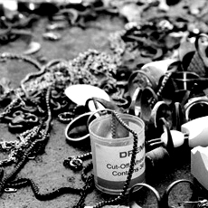
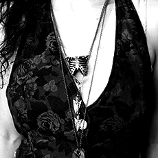
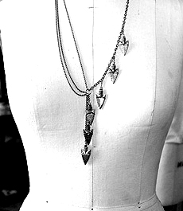
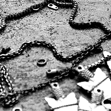

- 
- 
- 
- 
✂ Nearly five years ago Big Cartel set out to help artists make a living doing what they love
It started out with our friend’s bands, then to tee-shirt designers we knew, then to jewelry makers, and very quickly our little project had started to spread all over the world. On August 17th 2010, we opened our 100,000th store. It was a major milestone for us, and we wanted to learn more about the artist who sent the counter over the edge. This is the story of Lillian Crowe, the 100,000th Big Cartel store.
Lillian Crowe grew up in Manhattan and, being the daughter of performing artists, inherited a creative mind and many talents. Performing as a child at the Metropolitan Opera House, she learned to appreciate costumes, fabrics, and the charming details involved in fashion. As a kid, she thoughtfully dressed herself in particular outfits, giving special attention to her rule of “no black.” She soaked in the culture expanding around her on the streets of New York, and kept a close eye on the city’s style landscape. She developed a gift for hand-crafted work during one of her early projects where she spent months sewing sequins, one by one, onto a pair of stretchy pants. The process rendered the pants unwearable, but gave her motivation to create her own pieces to suite her specific style.
She continued to enjoy fashion and later enrolled in fashion school, studying pattern making and draping. She knew she wanted to create her own clothing line, but realized early on she needed to start small.
Her inspiration came from her love of museum relics & the curious stories that these old artifacts would tell. She loved to walk around and contemplate the history behind these items, and what brought them to the museum.
She had ideas for jewelry that had similarities with these relics but couldn’t find anything that came close to her concepts. So she taught herself to sculpt wax, make molds, and reclaim old jewelry hardware, and she started her own line of simple, easy to wear, statement pieces.